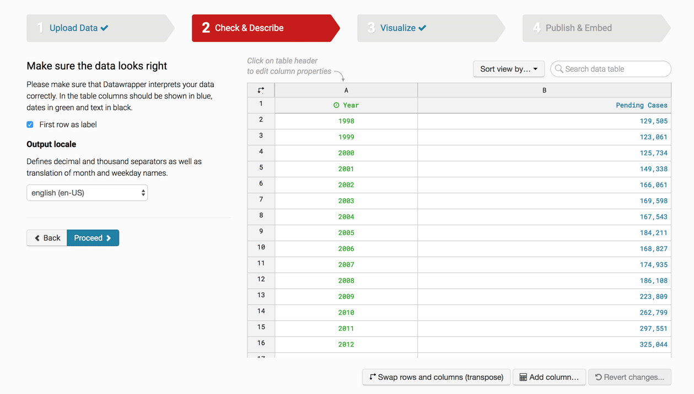
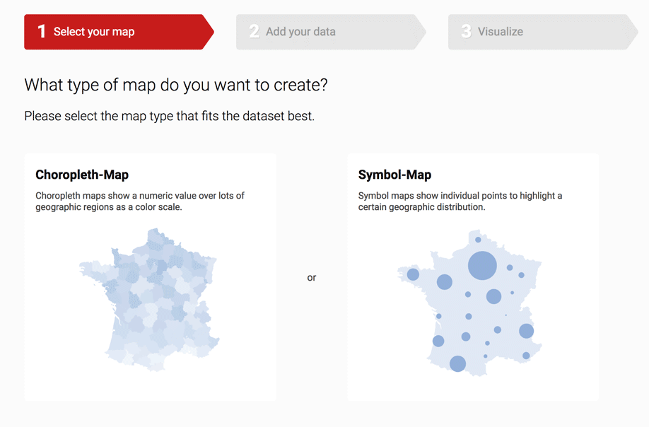

Data Visualization 2
How to Use Datawrapper to Make Charts & Maps!
Lena Groeger, ProPublica
We're going to be using a slightly tweaked version of Datawrapper's own fabulous tutorial series to make a bar chart, line chart, and map.
Let's Make a Bar Chart
Here's a bar chart of the states with the highest immigrant population (as of 2016). We're going to make it from scratch.
| State | Immigrant Population |
|---|---|
| California | 10677700 |
| Texas | 4729900 |
| New York | 4536100 |
| Florida | 4236500 |
| New Jersey | 2016100 |
| Illinois | 1783500 |
| Massachusetts | 1123900 |
Source: Migration Policy Institute
Step 1: Upload Data
There are lots of ways to import data into Datawrapper, but we'll start with the easiest one – copy and paste!
Your dataset should be formatted like this:
- Descriptive labels in the first column as categories.
This will determine the label in front of each bar. - Corresponding values in the second column as categorical dimensions.
This will determine the length of each corresponding bar.
Note that the big numbers for immigration are intentionally without commas or extra formatting. Unformatted numbers are always best!
Copy the dataset into the upload field in Datawrapper. Then click "Proceed" and continue.
Step 2: Check & Describe
Make sure everything looks good here. Note that because I pasted in the header rows "Year" and "Number of Immigrants", I check the "First row as label" button. That will make sure that it doesn't think those fields are actual data!
If everything looks fine, then click "Proceed."
Step 3: Visualize

Datawrapper will try to guess what format your data should be in. Here, it's guessing a line chart (Cue discussion of line charts vs bar charts!) But I actually want a bar chart, so I'm going to select bar chart from the menu of chart types.
Better! Now we have lots of options for how to style and annotate this chart, in the refine, annotate, and design tabs.
There are lots of things you can do in the Refine tab.
Sorting: Depending on the angle of your story, you may want to sort the bars.
Labeling: You can align the numbers left or right, display grid lines, change the number formatting, etc.
Appearance: You can change the color of the bars, make the bars thicker, add a separating line, or a background to the bars.
In this case, I'm going to give the bars a background grey and make them thicker and dark red, and also separate rows with dotted line.
Next we go to the Annotate tab.
Let's give the chart a title, description, and add the source of the data. If you have a URL to the data source, that's even better.
We're going to quickly pass by the Design tab, and go straight to Publish!
Step 4: Publish & Embed
The most important step of all: publishing our chart!
Once you click Publish, you have the option of sharing, embedding, exporting or duplicating your chart.
And you're done!
Bonus question to consider: California, Texas, New York and Florida are pretty populous states. Why might this be a problem for our visualization?
Here's a hint:
What other metric of immigration population could we use to represent the "highest" immigrant states? Here's more data that might be useful.
2: Let's Make a Line Chart
We're going to recreate a line chart of backlogged immigration cases. The original Datawrapper chart was made by Carl V. Lewis, and data is from Syracuse University's TRAC reports. I've pulled the data from the TRAC website and stuck it in this spreadsheet. Here's more context for the backlog.
Step 1: Upload Data
We'll follow the same steps as before, and start with uploading our data. This time rather than copying and pasting, we're going to link directly to a Google Spreadsheet.
Paste in this URL:
https://docs.google.com/spreadsheets/d/1KZSBBzPsNDOSW5Rpt0JIWm-ZlmvLcNuDHVh5qufNcVc/edit#gid=0
If all goes well, it should give you some green checkmarks to indicate that there are no issues with the spreadsheet. Remember: the spreadsheet has to by public for this to work.
Step 2: Check & Describe
Check again that everything looks good. If so, click "Proceed."
Step 3: Visualize
In this case, Datawrapper guessed correctedly that we wanted a line chart.
Let's first go to the Refine tab. Let's set the chart to begin at 0, by going to Custom Range and setting our minimum as 0 and maximum to 800,000. then since we don't need all of these tick marks, let's get rid of some by setting out Custom Ticks to 100,000 , 500,000 and 750,000.
I'm going to use the Customize lines section to change the line color to red, and the Customize symbol section to add little diamonds to the start and end of our line.
Next the Annotate tab. Let's give our chart a title, description, source line, and a short note on when this data was collected,
Next I'm going to use the Highlight range values section to add the years that Obama and Trump were in office, and give each section an annotation using the Text annotations section. Note that you can expand the controls for the annotations by clicking the double arrows buttons on the right.
You're chart should look something like this:
Now we Publish & done!!
4: Let's Make a Map
We're going to make a choropleth map of UV Exposure in the United States, with data on ultraviolet radiation from the National Cancer Institute.
Step 1: Select your map
Datawrapper gives you several options for types of maps. A choroplth map is a pretty common map form that is good for showing how states or counties compare to each other on some metric.
Select Choropleth map.
Then search for USA counties. Once you found it, click Next.
Step 2: Add your data
We've done copying and pasting and also imported our data from a Google Spreadsheet, so this time we're going to try uploading a CSV file. Make sure you have this file called uv-county.csv downloaded to your computer before going to the next step.
Click on the "... or import your dataset" button on the bottom left, the Start Import. The popup warns you that in order to make a county choropleth map, we need an ID for each county – called the FIPS Code.

Click on "Alternatively, click here to upload a CSV-file." and find the uv-county.csv file you just downloaded (it should be somewhere on your Desktop or in your Downloads folder.
Then you have to tell Datawrapper which column has this magical ID, the FIPS Code. In our case it is a column called COUNTY_FIPS, and Datawrapper should automatically recognize that.
Looks like there are some FIPs codes that Datawrapper doesn't recognize. Notice what it's showing? The state of Virginia. But Virginia is the whole state, and we are just mapping counties, so we're going to ignore this. Note that in your cases, if you have a lot of unmatched FIPS codes, it might be a problem worth checking out further.
Now you're going to select the column of data you want to map! In this case, we're mapping the average daily UV exposure of each county (in in watt hours per square meter), so go ahead and select the column UV_ wh/m2.
Step 3: Visualize
We should have a pretty blue map! But cool blue shades doesn't seem like the appropriate color for a map on cancer-causing UV rays, so let's adjust. We're also going to play with the color bucket cutoffs so that we can better distinguish high and low exposure counties.
In the Refine tab under Color palette, under Stops select "quartiles," which automatically breaks the range for UV exposure into 4 buckets.
I can either select from a dropdown of pre-selected color ranges, or I can make my own. Since there isn't one I really like here, I'm going to create my own red-yellow color palette.
You can either keep fiddling with the colors until you find a selection you like, or you can enlist the help of smarter people who have thought a lot about color so that you don't have to. One of my favorite color picking tools is Color Brewer, which gives you specifically designed color sequences for maps. Another tool that helps with selecting colors on a gradient is 0to255.com.
Everyone likes tooltips, so let's give our map some! Open up the Tooltip section and click on Customize tooltips. Now you have an interface where you can combine words plus any field in your data. I'm going to select COUNTY_NAME and STATE_ABR for the title, and UV_wh_m2 for the body.
Now we have tooltips!
I'm going to adjust the Map key a little bit to make the legend more legible.
Next in the Annotate tab, let's give our map a title description, and data source + link.

Step 4: Publish & Embed
If everything looks good, hit that Publish button!
4: Now, you try!
We've successfully made a bar chart, line chart and choropleth map! But Datawrapper can do so much more! In the time remaining, I want you to take one of the following datasets (or one of your own), and use Datawrapper to make a new chart. It can be one of the forms we've already covered, or a new form (push yourself!)
Here are a few sample datasets you can play with.
-
Body Parts: How much various limbs are worth in different state Workers Compensation programs. For more context see this story, this graphic, and this explanation. Data from the ProPublica Data Store.
-
Cruise Outbreaks: Outbreaks of illness aboard cruise ships, with start & end dates as well as the cause of the outbreak. Not for the faint of heart. For more context see this project. Data from the CDC's Vessel Sanitation Program.
-
Temperature: Daily temperature for two towns in the United States: Key West, Florida and Barrow, Alaska.
-
Oil Spills: The location at dates of oil spills in the United States from 2013-2017. Data from the Pipeline and Hazardous Materials Safety Administration.
-
New Permanent Residents: Annual Number of New Legal Permanent Residents by Country of Birth, Years 1999 to 2016. Data from the Migration Policy Institute.
Remember that Datawrapper has many more tutorials on all different types of charts, from stacked bar charts to area charts to scatterplots.
Also, you can browse through the Datawrapper "River" to see how other people have used Datawrapper to make their own charts. You can even click on a chart to get the data or reuse it (with proper attribution).